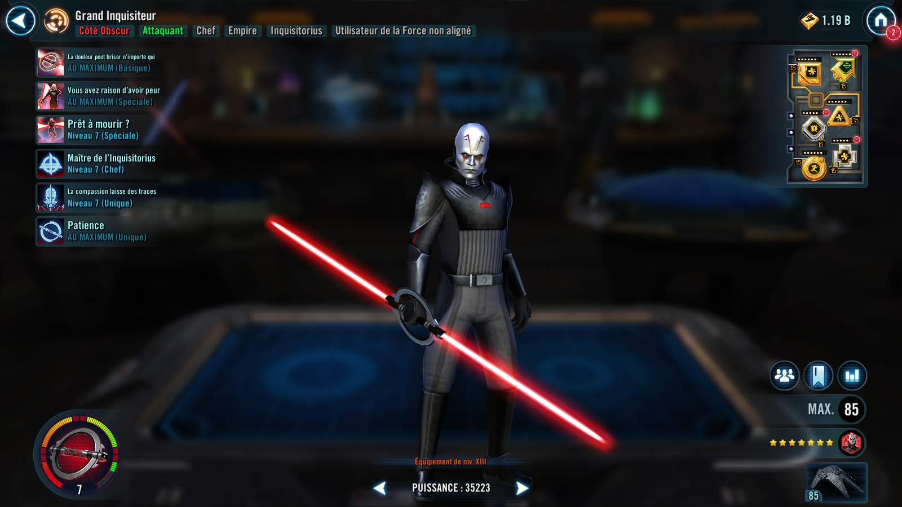
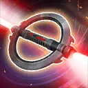

Grand Inquisitor
The calculating and relentless master of the Inquisitorius who specializes in dealing with Jedi
The calculating and relentless master of the Inquisitorius who specializes in dealing with Jedi


Deal Physical damage to target enemy. If all allies are Inquisitorius, inflict a stack of Purge (max 6), which can't be resisted. Reduce the target enemy's Critical Damage by 15% (stacking) for 2 turns per attack, which can't be resisted. On Grand Inquisitor's turn:
- If the enemy has at least 3 stacks of Purge at the start of turn: Attack a second time always scoring a critical hit if able.
- If the enemy has 6 stacks of Purge at the start of turn: Attack a third time dealing true damage instead, which can't be evaded.
Dispel all debuffs on Inquisitorius allies and then equalize their current Health and Protection percentages. Deal Physical damage to all enemies and inflict Ability Block and Vulnerable for 1 turn to all enemies with Purge, which can't be resisted. For each enemy with Purge, Inquisitorius allies recover 4% Health. Inquisitorius allies gain Critical Damage Up for 2 turns.
Remove 100% Turn Meter from the target enemy, which can't be resisted, and deal Physical damage. Then inflict Torture for 1 turn, which can't be copied, dispelled, evaded, or resisted. Gain buffs for 2 turns based on the number of stacks of Purge on the target enemy.
- 1+ Stack: Grand Inquisitor gains Offense Up for 2 turns
- 2+ Stacks: Grand Inquisitor gains Speed Up for 2 turns
- 3+ Stacks: Grand Inquisitor gains Tenacity Up for 2 turns
- 4+ Stacks: Inquisitorius allies gain Offense Up for 2 turns
- 5+ Stacks: Inquisitorius allies gain Speed Up for 2 turns
- 6 Stacks: Inquisitorius allies gain Tenacity Up for 2 turns
Torture: Take bonus damage equal to 10% of this character's Max Health when damaged by an attack; reduce Defense by 10% (stacking, max 50%) for the rest of the encounter when damaged by an attack; can't gain bonus Turn Meter
Omicron Boost : While in Territory Wars: The first time all enemies reach 6 stacks of Purge, this ability's cooldown is reset if this ability has not defeated an enemy. If the target enemy has 6 stacks of Purge and is not Jedi, inflict Buff Immunity for 1 turn, which can't be dispelled, evaded, prevented, or resisted. If the target enemy has 6 stacks of Purge and is Jedi, instantly defeat them. Jedi enemies defeated this way can't be revived.

Empire allies gain 20% Max Health and Max Protection and 10 Speed. If all allies are Inquisitorius at the start of battle, they gain an additional 46% Max Health and Max Protection and 15 Speed, and they are immune to Ability Block. Also, Grand Inquisitor gains Defense Penetration Up and Offense Up for 2 turns, which can't be dispelled or prevented.
Additionally, if all allies are Inquisitorius at the start of battle, whenever Purge is inflicted, Inquisitorius allies gain benefits based on their role for the rest of the encounter (stacking, max 200%):
- Attackers: +2% Critical Damage
- Healers and Supports: +2% Potency
- Tanks: +2% Defense
If the enemy Leader is Jedi, Inquisitorius allies start the battle with buffs based on their role for 1 turn:
- Attackers: Advantage
- Healers and Supports: Foresight
- Tanks: Taunt
Omicron Boost : While in Territory Wars: While Grand Inquisitor is active, whenever an enemy loses Purge, they regain it at the end of the turn. On their turn, Inquisitorius allies can ignore Taunt to target an enemy with 6 stacks of Purge.
For each Inquisitorius ally, enemies with Purge have -10% Defense and -5 Speed.
If an enemy evades an Inquisitorius ally's attack, all other enemies take true damage and dispel Foresight from themselves.
The first time each enemy reaches 6 stacks of Purge, Grand Inquisitor takes a bonus turn and gains 10% Critical Avoidance, Health Steal, and Offense and 5 Speed until the end of the encounter (stacking, max 6). These bonuses are doubled if the enemy is Jedi.
Omicron Boost : While in Territory Wars: Whenever Jedi enemies with Purge gain Protection Up, they take damage equal to 25% of their Max Health at the end of that turn. This damage can't defeat enemies. If an enemy with 6 stacks of Purge were to reduce Grand Inquisitor to 1% Health, he recovers 100% Health and Protection (limit once per enemy).
At the start of battle, if all allies (minimum 3) are Inquisitorius, this character gains 20% Max Health, Max Protection, and Potency. Inflict all enemies with a stack of Purge at the start of the encounter, which can't be evaded or resisted. Whenever an enemy damages this character with an attack while attacking out of turn, that enemy gains a stack of Purge (max 6), which can't be evaded or resisted. Whenever Purge is consumed or dispelled on an enemy, this character gains 3% Turn Meter.